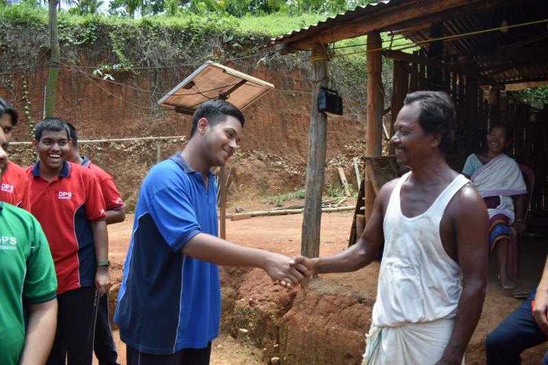

The polluted places in Assam needs proper cleanliness and Garbage Management. During a community service we did a cleanliness drive throughout Guwahati to aware people about the toxic atmosphere that might get created due to pollution and improper dumping of garbage.
As per the CBSE guidelines during a community service at Rani, remote area of Guwahati. We had conversations with the people living at the village. We not only got to know about the problems they face living in such an undeveloped area but also about the problems faced due to the wild elephants, which is also a reason for the destruction to their crops and harvest. We moreover had discussions regarding the purification of water and did awareness regarding importance of neatness and cleanliness.
